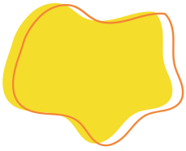
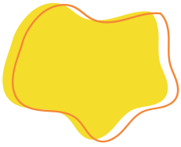

Corporativos
Community Day
Uma iniciativa que incentiva os colaboradores de uma empresa a se engajarem em ações sociais em benefício da comunidade. Durante esse dia, as empresas mobilizam seus funcionários para participarem de atividades voluntárias, promovendo impacto positivo na sociedade, fortalecendo laços entre os colaboradores e alinhando a missão da empresa com práticas de responsabilidade social. O Community Day é uma oportunidade para os colaboradores experimentarem o trabalho voluntário, vivenciarem novas experiências e reforçarem o espírito de equipe, contribuindo para o bem-estar social e ambiental da comunidade.
 


Game 2030
Um jogo inovador desenvolvido especialmente para o ambiente empresarial. Um game lúdico com uma potente ferramenta de aprendizagem que alinha o entretenimento com a educação corporativa sobre os Objetivos de Desenvolvimento Sustentável (ODS) da Agenda 2030 da ONU. Os participantes separados por equipes são desafiados a pensar criticamente e a agir de maneira colaborativa, enfrentando problemas reais e encontrando soluções sustentáveis na visão de uma empresa. A proposta pode ser customizada com informações, dados, metas atingidas que sua empresa obteve em relação aos compromissos dos ODS assumidos. Este treinamento pode ser reportado ao COP (Relatório do Pacto Global).
Kids Day
Um evento anual para celebrar o dia das crianças na sua empresa onde realizamos uma programação especial para os filhos dos colaboradores. O Programa é uma ação que aproxima a família do ambiente de trabalho, sendo estabelecido um dia para que os profissionais possam levar seus filhos à empresa. Oficinas culturais e ambientais, esquetes teatrais sobre um dia de trabalho fazem parte deste programa.

Leilão Temático
Os nossos leilões sempre acabam com um gosto de “quero mais”. Divididos em equipes, os grupos devem responder perguntas sobre o tema proposto pela empresa, afim de conseguirem recompensas por cada resposta correta, possibilitando a compra de itens no nosso leilão. Ao decorrer da atividade, trazemos dados importantes e atualizados sobre a temática, eis alguns: Segurança no Trabalho - Semana SIPAT Abril verde Maio Amarelo Outubro Rosa Novembro Azul.
Robótica
O projeto STEAM visa unir conhecimentos de quatro áreas (ciências, tecnologia, engenharia, artes e matemática) em torno da construção ou automatização de algo que resolva o problema proposto. Kits de robótica, projetos "do it yourself" e arduinos fazem desse novo projeto algo dinâmico e inovador para os colaboradores.
Space Room
O "Scape Room" é uma atividade estratégica e engajadora que visa fortalecer as habilidades da equipe, promover o trabalho em conjunto e desenvolver a resolução de problemas de maneira colaborativa. Os participantes são desafiados a resolver enigmas e superar obstáculos dentro de um ambiente temático, simulando situações complexas. Ao participar do Escape Room, os colaboradores têm a oportunidade de aprimorar competências, além disso, a natureza desafiadora da atividade estimula a criatividade e a resiliência, elementos cruciais para o sucesso em um ambiente empresarial dinâmico. O Scape Room Corporativo emerge como uma ferramenta valiosa para aprimorar o desempenho e fortalecer o espírito colaborativo dentro da organização.

Teatro
Ferramenta criativa e interativa utilizada para melhorar a comunicação, o trabalho em equipe, e o desenvolvimento pessoal dos colaboradores. Por meio de apresentações teatrais, oficinas de improvisação, e encenações de situações do cotidiano empresarial, os colaboradores podem explorar temas como liderança, relacionamento interpessoal, gestão de conflitos e empatia.
Sipat
Focado na conscientização dos colaboradores sobre a importância da saúde e segurança no ambiente de trabalho, a SIPAT envolve uma série de atividades como palestras, workshops, dinâmicas, treinamentos práticos, e apresentações sobre prevenção de acidentes, ergonomia, saúde mental, primeiros socorros, e bem-estar geral. O objetivo é promover um ambiente de trabalho seguro e saudável, incentivando a cultura da prevenção e do cuidado entre todos os colaboradores.